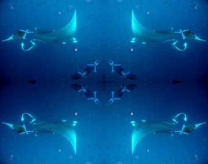

Pulau komodo adalah sebuah pulau yang terletak di kepulauan Nusa Tenggara, berada di sebelah timur pulau sumbawa,yang dipisahkan oleh selat sape. Pulau komodo dikenal sebagai habitat asli hewan komodo. pulau ini termasuk salah satu kawasan Taman Nasional Komodo yang di kelola oleh pemerintah pusat. di pulau komodo kita bisa traing sambil melihat komodo
Pulau padar adalah pulau ketiga terbesar di kaawasan Taman Nasional Komodo, setelah pulau komodo dan pulau rinca.disekitar pulau ini terdapat tiga atau empat pulau kecil dan tiga selat yg sangat cantik.kita bisa traking sampai ke puncang gunung dan menikmati pemandagan yg indah

MANTA POINT adalah salah satu spot wisata keren di labuan bajo yang dapat kamu tempuh 25 menit dengan menggunakan kapal kayu dari lokasi pink beach.di manta poin kalian bisa snorkling bersama manta atau ikan pari jagan kawatir karna manta yang berada di sana sudah jinak
